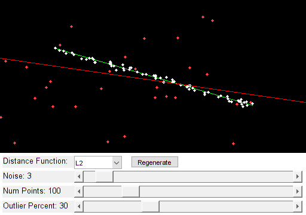

Robust Line Fitting
Example of using cv.fitLine function for fitting 2D line to points in presence of outliers.
Switch between the different M-estimator functions and see, how well the robust functions fit the line even in case of ~50% of outliers.
Sources:
function varargout = fitline_demo_gui() % create the UI h = buildGUI(); if nargout > 0, varargout{1} = h; end end function pts = sample_line(p1, p2, num, noise) %SAMPLE_LINE Sample points from line segment % % pts = sample_line(p1, p2, num) % pts = sample_line(p1, p2, num, noise) % % ## Input % * __p1__ first line point % * __p2__ second line point % * __num__ number of points to sample % * __noise__ gaussian noise added, default 0 % % ## Output % * __pts__ points matrix num-by-2 % if nargin < 4, noise = 0; end t = rand(num,1); pts = bsxfun(@plus, p1, bsxfun(@times, p2 - p1, t)); pts = pts + randn(num,2) * noise; end function onChange(~,~,h) %ONCHANGE Event handler for UI controls % retrieve current values from UI controls alg = get(h.pop, 'Value'); algs = get(h.pop, 'String'); r = round(get(h.slid(1), 'Value')); numPoints = round(get(h.slid(2), 'Value')); noise = round(get(h.slid(3), 'Value')); set(h.txt(1), 'String',sprintf('Outlier Percent: %d',r)); set(h.txt(2), 'String',sprintf('Num Points: %d',numPoints)); set(h.txt(3), 'String',sprintf('Noise: %d',noise)); numOutliers = round(numPoints * r/100); dist_func = algs{alg}; % we need at least two points to fit a line if numPoints < 2, return; end % draw ground-truth line segment from which we sample points p0 = [90, 80]; p1 = h.sz([2 1]) - p0; % sample points from line (with some noise) line_points = sample_line(p0, p1, numPoints-numOutliers, noise); % create outlier points outliers = bsxfun(@times, rand(numOutliers,2), h.sz([2 1])); % fit line on all points lin = cv.fitLine([line_points; outliers], 'DistType',dist_func); % draw points and lines img = zeros([h.sz 3], 'uint8'); img = cv.line(img, p0, p1, 'Color',[0 255 0]); img = cv.circle(img, line_points, 2, ... 'Color',[255 255 255], 'Thickness','Filled'); img = cv.circle(img, outliers, 2, ... 'Color',[255 64 64], 'Thickness','Filled'); img = cv.line(img, ... lin(3:4) - lin(1:2)*h.sz(2), ... lin(3:4) + lin(1:2)*h.sz(2), 'Color',[255 0 0]); % show result set(h.img, 'CData',img); drawnow; end function h = buildGUI() %BUILDGUI Creates the UI % parameters sz = [256 512]; img = zeros([sz 3], 'uint8'); % build the user interface (no resizing to keep it simple) h = struct(); h.sz = sz; h.fig = figure('Name','Fit Line Demo', ... 'NumberTitle','off', 'Menubar','none', 'Resize','off', ... 'Position',[200 200 sz(2) sz(1)+105-1]); if ~mexopencv.isOctave() %HACK: not implemented in Octave movegui(h.fig, 'center'); end h.ax = axes('Parent',h.fig, 'Units','pixels', 'Position',[1 105 sz(2) sz(1)]); if ~mexopencv.isOctave() h.img = imshow(img, 'Parent',h.ax); else %HACK: https://savannah.gnu.org/bugs/index.php?45473 axes(h.ax); h.img = imshow(img); end h.txt(1) = uicontrol('Parent',h.fig, 'Style','text', ... 'FontSize',10, 'HorizontalAlignment','left', ... 'Position',[5 5 120 20], 'String','Outlier Percent:'); h.txt(2) = uicontrol('Parent',h.fig, 'Style','text', ... 'FontSize',10, 'HorizontalAlignment','left', ... 'Position',[5 30 120 20], 'String','Num Points:'); h.txt(3) = uicontrol('Parent',h.fig, 'Style','text', ... 'FontSize',10, 'HorizontalAlignment','left', ... 'Position',[5 55 120 20], 'String','Noise:'); h.txt(4) = uicontrol('Parent',h.fig, 'Style','text', ... 'FontSize',10, 'HorizontalAlignment','left', ... 'Position',[5 80 120 20], 'String','Distance Function:'); h.slid(1) = uicontrol('Parent',h.fig, 'Style','slider', ... 'Value',30, 'Min',0, 'Max',100, 'SliderStep',[1 10]./(100-0), ... 'Position',[125 5 sz(2)-125-5 20]); h.slid(2) = uicontrol('Parent',h.fig, 'Style','slider', ... 'Value',100, 'Min',2, 'Max',500, 'SliderStep',[1 50]./(500-2), ... 'Position',[125 30 sz(2)-125-5 20]); h.slid(3) = uicontrol('Parent',h.fig, 'Style','slider', ... 'Value',3, 'Min',0, 'Max',50, 'SliderStep',[1 5]./(50-0), ... 'Position',[125 55 sz(2)-125-5 20]); h.pop = uicontrol('Parent',h.fig, 'Style','popupmenu', ... 'Position',[125 80 80 20], ... 'String',{'L2', 'L1', 'L12', 'Fair', 'Welsch', 'Huber'}); h.btn = uicontrol('Parent',h.fig, 'Style','pushbutton', ... 'Position',[220 80 80 20], 'String','Regenerate'); % hook event handlers, and trigger default start set([h.slid, h.pop, h.btn], 'Callback',{@onChange,h}, ... 'Interruptible','off', 'BusyAction','cancel'); onChange([],[],h); end